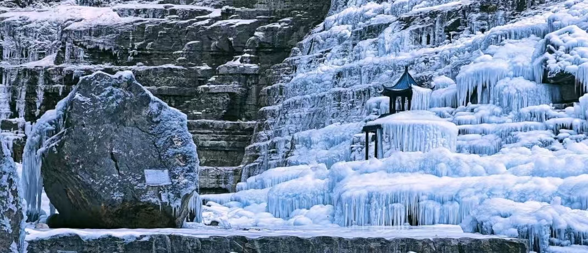
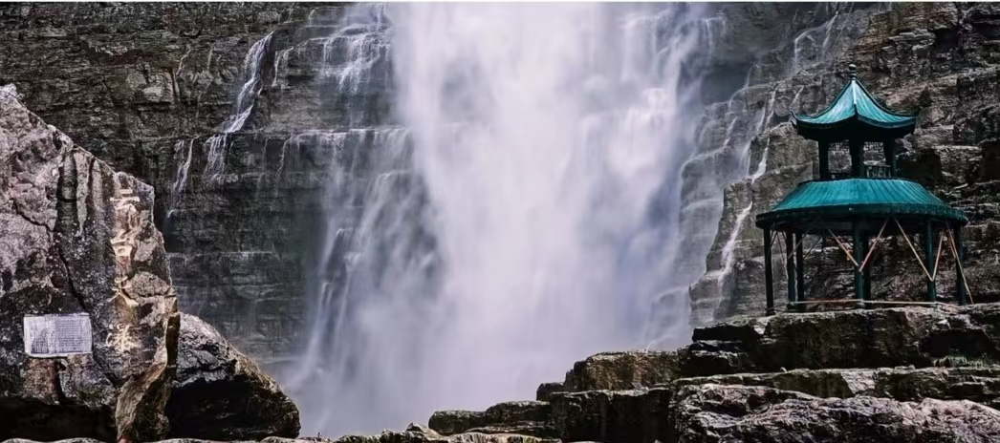

云台山位于河南省焦作市修武县境内，是国家级5A旅游景区、世界地质公园、国家森林公园，以丹霞地貌、红石峡谷、飞瀑流泉、奇峰云海为主要特色。景区面积广阔，山水相依，兼具雄、奇、险、秀、幽五大特点，是中原地区老牌热门山水旅游目的地。
云台山四季风景各异，春赏山花、夏观飞瀑、秋赏红叶、冬看冰挂，园区配套成熟、交通完善、管理规范，适合家庭出游、情侣旅行、研学观光与休闲度假，也是河南山水名片之一。

📍 地址：河南省焦作市修武县云台山风景区
🎫 门票：云台山实行套票制，含各大景点+观光车；学生凭学生证半价，60岁以上老人、1.4米以下儿童、现役军人等凭证免门票
⏰ 开放时间
旺季（4月—10月）07:00-18:00，淡季（11月—3月）07:30-17:30，全年无休正常开放
🚗 交通指南
🍜 当地特色美食
经典一日游：游客中心 → 红石峡 → 子房湖 → 潭瀑峡 → 泉瀑峡 → 返程。
全景两日游：Day1 红石峡+潭瀑峡+泉瀑峡，宿云台古镇；Day2 茱萸峰+玻璃栈道+万善寺，轻松打卡全部核心景点。
1. 景区景点跨度大，观光车为必备交通，合理安排换乘时间。
2. 峡谷与登山路段台阶密集，务必穿舒适防滑运动鞋。
3. 山区温差明显，夏季做好防晒，春秋备好薄外套。
4. 雨季瀑布景观最佳，但山路湿滑，注意行走安全。
5. 玻璃栈道、登山悬崖路段，恐高人群谨慎选择体验。
6. 节假日人流量巨大，建议早出发、错峰游玩，提前预约门票。
7. 景区禁止私自攀爬野山、偏离步道，遵守园区游览规定。
春季草木复苏，峡谷清新雅致，适合踏青散心；夏季山泉充沛、瀑布壮观，平均气温凉爽，是天然避暑胜地；秋季满山红叶，层林尽染，山水色彩层次丰富，拍照绝美；冬季冰瀑冰挂景观独特，银装素裹，别有北国山水风情。